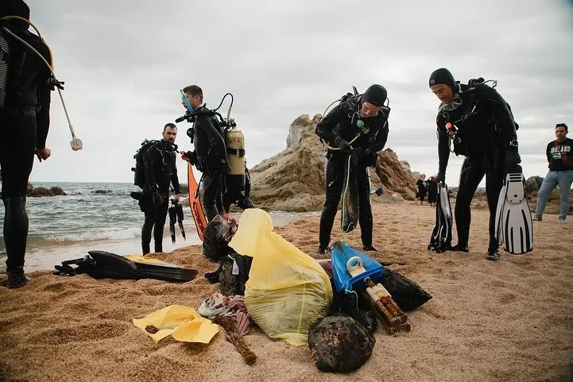
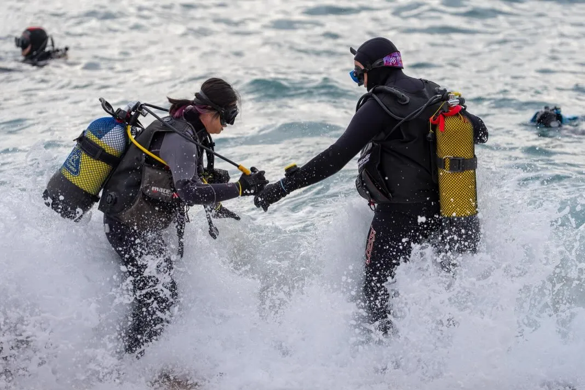
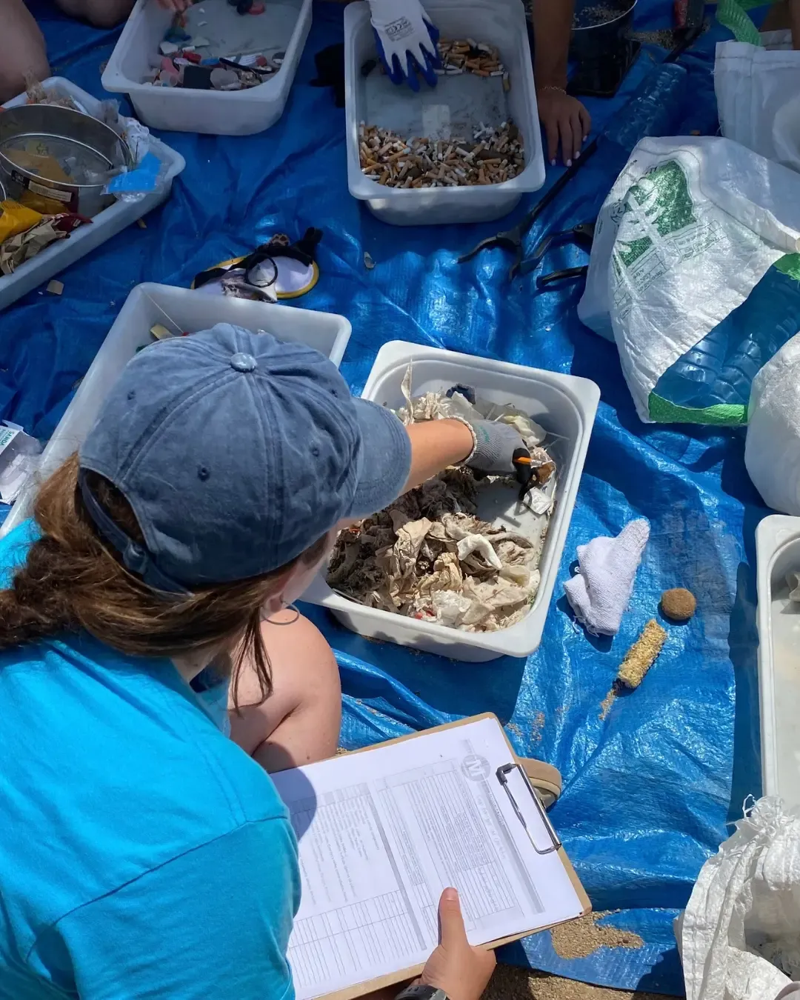
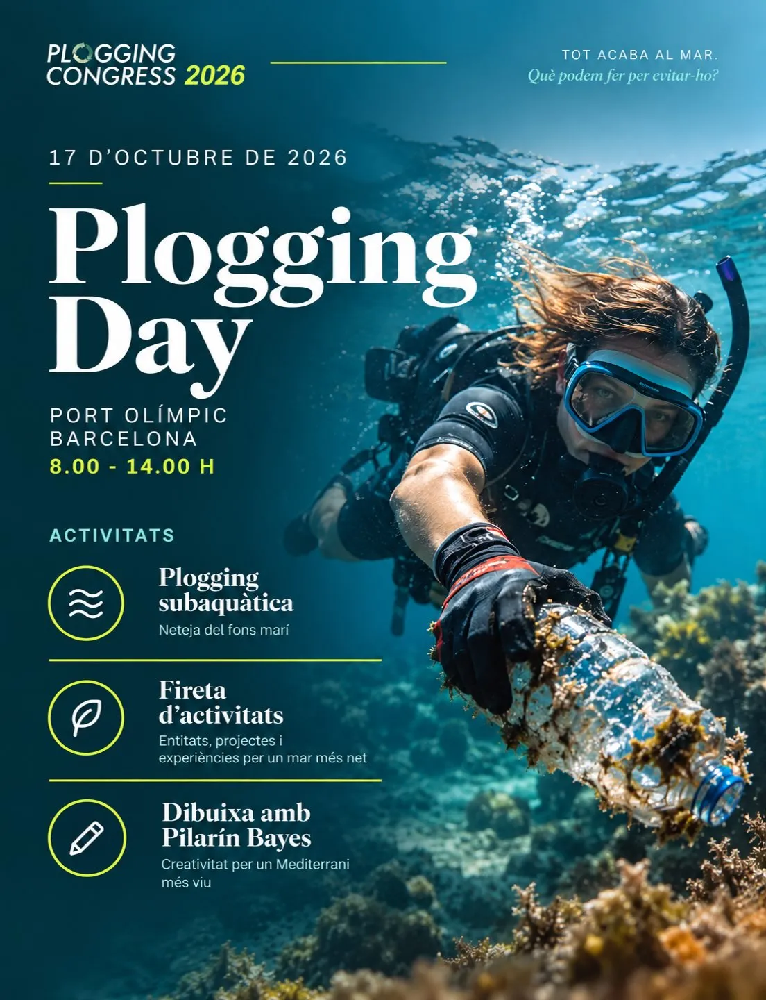
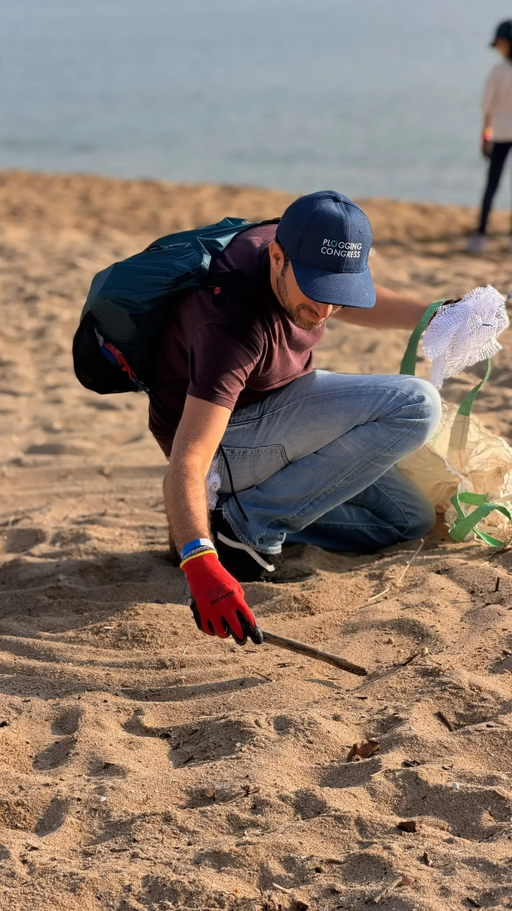

02 · Contaminación marina
Plogging Congress
El congreso de 2026 reunió en el Port Olímpic a científicos, empresas, administraciones y organizaciones bajo el lema «Todo acaba en el mar. ¿Qué podemos hacer para evitarlo?». El foco estuvo en la trazabilidad del residuo y la corresponsabilidad.





Una premisa para el proyecto
La charla del microbiólogo Donato Giovannelli, «El residuo no desaparece, viaja», amplió una idea central de Mediterráneo: lo que ocurre en la ciudad continúa aguas abajo. El mar produce cerca de la mitad del oxígeno que respiramos gracias a organismos fotosintéticos y, al mismo tiempo, recibe parte de los residuos y aguas que generamos.
Deberíamos hablar de Planet Ocean, no solo de Planet Earth.
Descubrir y destruir
La historia recordada durante la charla corresponde a la expedición Pleiades de 1976. Las cámaras de Peter Lonsdale fotografiaron grandes conchas de almeja en el fondo del Rift de Galápagos, junto a una lata de cerveza. Al principio se llegó a pensar que podían ser restos arrojados desde un barco. En 1977 se confirmó allí la existencia de fuentes hidrotermales y comunidades animales desconocidas.
Otro dato requería corrección: la Autoridad Internacional de los Fondos Marinos informa 30 contratos de exploración otorgados a 21 contratistas. No son miles de licencias ni existe todavía explotación comercial aprobada. La tensión documental sigue siendo fuerte: podemos alterar ecosistemas antes de comprenderlos.
Microbios que llegan al laboratorio
Las fuentes hidrotermales son chimeneas del fondo marino por las que circula agua calentada por el interior de la Tierra y cargada de minerales. Microorganismos capaces de vivir allí producen enzimas estables a altas temperaturas. Enzimas de microbios termófilos, tanto marinos como de fuentes termales terrestres, hicieron posible la PCR utilizada en pruebas diagnósticas, entre ellas las de COVID-19.
De la ciudad al mar
La mesa redonda reunió a Eduard Moreno, coordinador de playas del Ayuntamiento de Barcelona; Nacho Gallostra, responsable de proyectos de acción climática y sostenibilidad de Aigües de Barcelona; Silvia Mayo, presidenta del Col·legi d’Ambientòlegs de Catalunya y gerente territorial de Ecovidrio; Marta Ciurana, directora general de GBI Paprec, grupo dedicado a limpieza urbana, recogida, tratamiento y valorización de residuos; y Clara Comas, responsable de comunicación y coordinación de MedPellets en Good Karma Projects.
Observación de trabajo: resultó revelador cómo la responsabilidad circulaba entre empresas, ciudadanía y hábitos cotidianos. Queda abierta la pregunta por el papel del Estado en la prevención, la regulación y el control.
Pistas fotográficas
- Toallitas y otros residuos que llegan a las depuradoras.
- Microfibras que salen del lavado de ropa y entran al ciclo del agua.
- Pellets industriales que se confunden con la arena.
- La clasificación del residuo después de una limpieza y la trazabilidad hasta su origen.
- Las infraestructuras invisibles que conectan casa, ciudad, río y mar.